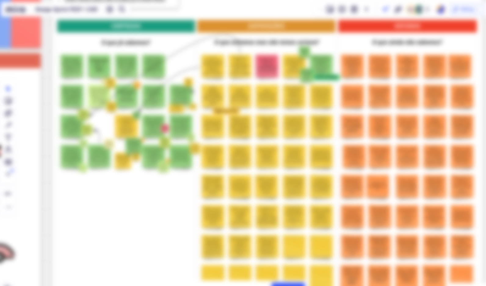
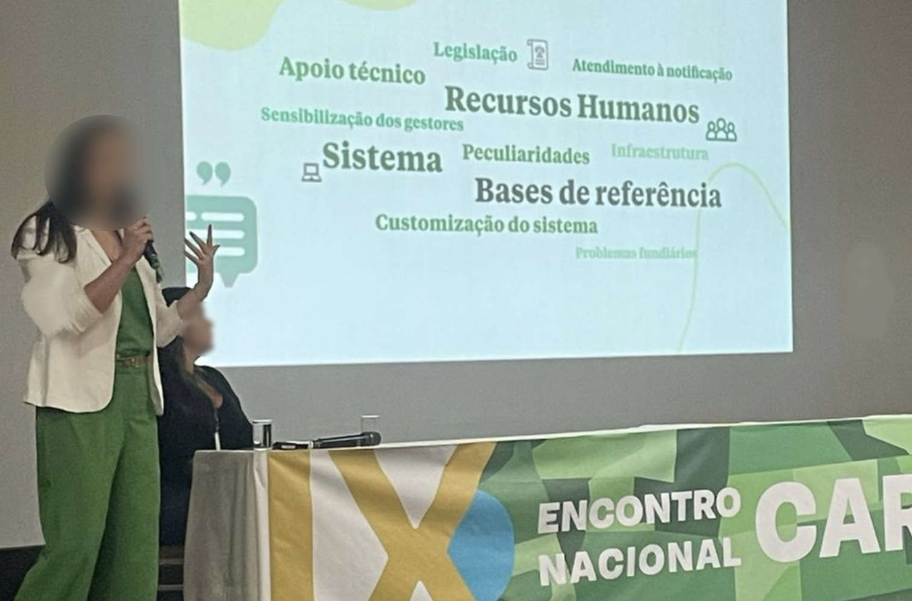

National Rural Environmental Registry
This is a Foundational research I lead at YouX Group between July and November 2022.
As the Lead UX Researcher, I was responsible for guiding the team through all research
phases, including research design, execution, deliverables, and informing research findings.
Note: Some informations, visuals and faces have been omitted or blurred to protect individuals' identities and comply with NDA.
Background
 The Brazilian Rural Environmental Registry (in Portuguese, Cadastro Ambiental Rural) is an
instrument of governmental policy to implement the new Forest Code of 2012. This project aims
to geo-reference all Brazilian rural properties and promote controlling, monitoring, and combating
deforestation of native vegetation. Considering the country’s huge populational and territorial
diversity, this project dealt with greater challenges.
The Brazilian Rural Environmental Registry (in Portuguese, Cadastro Ambiental Rural) is an
instrument of governmental policy to implement the new Forest Code of 2012. This project aims
to geo-reference all Brazilian rural properties and promote controlling, monitoring, and combating
deforestation of native vegetation. Considering the country’s huge populational and territorial
diversity, this project dealt with greater challenges.
Main goal and challenges
Main goal
Identify and map the particular pain points of each of the 27 Brazilian federative units (states) and propose applicable
solutions to their main issues.
Challenges
Each state of Brazil faces specific difficulties in implementing the Forest Code policy.
Most staff are experiencing research fatigue, which happens when individuals get tired of engaging in research,
especially when receiving little to no practical solutions for their issues. This happens mostly due to constantly
inviting individuals to join the research process as participants rather than active decision-makers.
Translate to the client the importance of tackling the multiple complex factors impeding policy implementation
rather than rushing to create new technological interventions.
Consider the particularities of a governmental client for developing deliverables that promptly deliver
outcomes and trigger insights.
Methods

Opting for collaborative semi-structured interviews allowed us to deeply discuss the existing barriers
and understand the user's complains and suggestions.
An online survey as a follow-up to interviews to collect additional quantitative data and address cases
where some staff could not participate in videoconferences.
Participants: The number of participants per session varied according to each state. Some representatives
wanted their whole team to engage, while others assigned one staff.
Tools: Miro, Microsoft Teams, Google Forms, Google Sheets, and Google Data Studio.
Insights
There was a discrepancy among secretaries, with some states having adequate financial and staff support while others required
additional support. Therefore, we emphasized the importance of prioritizing states with the greatest needs, which is crucial
to equalize the situation.
Apart from from mapping all the pain points and synthesizing them into actionable insights, we also
detected which secretaries required immediate support with training or needed help sensitizing their managers
to the importance of this agenda.
We have identified areas for improvement in the system that could assist staff in dealing with the unique characteristics
of their state's biome. This directly affects how information is recorded in the system. These areas of improvement were
promptly reported to the development team so that the issues could be addressed.
Aside from the technological issues within the system, most challenges were related to the diversity of users,
including individuals who are non-literate and have little to no contact with digital technologies. We emphasized
the importance of providing a simplified and easy-to-operate UI, primarily focusing on supporting different types of
users and making the complex flow of Environmental policies easier to understand, such as simplifying technical terms
or providing clear explanations of each step.
Beyond technological improvements, we highlighted the importance of providing support outside the system. Attempts to
inform particular users would not work by commonly used means like Instagram but by using more traditional means such
as radio and vehicles equipped with speakers for broadcasting announcements.
Impact

Our work brought actionable insights into the major project for monitoring and preserving Brazil’s
natural vegetation, which includes more than 7 million registries that cover 672 million hectares of national territory.
Our final research results were proudly shared with all state representatives in Brazil at the National Conference of
the Rural Environmental Registry.
Considering the busy context of our clients, my deliverables included an interactive dashboard created
in the Google Data Studio. It summarized the main qualitative and quantitative research findings in a visually appealing
and straightforward way of navigating through all the complex aspects researched. This allowed our client to showcase
this dashboard during multiple meetings for governmental presentations and quick decision-making.
Our collaborative process ensured that participating staff were active decision-makers who were constantly kept informed
of research results. This not only eased the phenomenon of research fatigue but also strengthened the relationship between
our client and the state's staff.
Learnings
Advocate for stakeholders, empathize and emphasize their challenges, but don’t forget the client’s perspective.
Work to strengthen their relationship, not the other way around.
Research fatigue may seem like a stiff wall, but an adequate research approach will help you break it.
Highlight the participants' role as collaborators rather than subjects. Keep them informed and foster partnership.
Not all clients require the same deliverables. Some may prefer a hundred-page research report, while others need a
smaller, straightforward solution. Make sure to adapt your work according to each client's needs.
Organization is your best friend in highly complex contexts. Keep everything documented since day one.